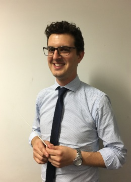

Ms. Jenny Going
Conductor
Jenny Going is Musical Director of the Essendon Symphony where she has been conductor since 2008. In 2016 she founded and is Musical Director for The West Melbourne Schools Orchestra, a group that is growing and improving rapidly. Jenny has conducted some of Melbourne’s leading ensembles including the Zelman Symphony, Ballarat Symphony, Melbourne University Biomedical Students Orchestra and Hopkins Sinfonia. In 2016 she was rehearsal conductor for Opera NZ’s season of Sweeny Todd.
Jenny was honoured to be the inaugural recipient of the Rosemary and John Hopkins Award in 2015 when she also completed her Masters of Music specialising in orchestral conducting at The University of Melbourne under Benjamin Northey.
She founded Noteable Music Education Resources in 2006. As Managing Director, she has written and published resources for classroom music teachers, including interactive digital resources. Jenny is a regular presenter of workshops at national music education conferences throughout Australia. She adjudicates for the Victorian School Music Festival and at the National Brass Band Championships.
During her music career Jenny has worked as a professional trombonist with the Royal New Zealand Navy Band, performed on stage with Randy Breaker, Arturo Sandoval, Robin Eubanks and Rob McConnell during her time studying in America, and toured extensively throughout the west coast of the USA and recorded with Ska Band ‘Ruder Than You’.
For further details, see www.jennygoing.com.au.

Mr. Andre Vikas
Assistant Conductor
Andre studied clarinet & composition at the Newcastle Conservatorium, NSW. He was concert master of the Newcastle Wind Orchestra from 2005 – 2008 and gained first class honours in clarinet, saxophone & flute.
Andre’s talents have given him the opportunity to perform at various overseas venues including New Zealand, USA and China where in 2006 with the Newcastle Wind Orchestra he gave a performance of Rhapsody in Blue and Johan De Meij’s Symphony No. 2 The Big Apple.
Andre’s musical experiences are varied and diversified. He has extended his skills to playing the Bass guitar. He has performed with many ensembles ranging in style from Big Band, Orchestra, Funk, Traditional Jazz, Eastern European & Punk to name only a few. In 2018 Andre was appointed assistant conductor of the West Melbourne Schools Orchestra.
Currently he enjoys performing with Babaganoush, a local Melbourne ensemble in he Middle Eastern tradition. In addition, Andre relishes the opportunity to compose wide and varied styles of music ranging from film scores, classical to punk music. Andre is a passionate, eclectic musician who delights in the opportunity to perform, compose and conduct.
History
The orchestra was founded in the 1990's by Paul Green (who still plays with us) as a string ensemble. Over the years the orchestra has grown to be a full symphony orchestra.
During this time, the orchestra performed under several names including Napier Chamber Orchestra, Napier Concert Orchestra and Napier Community Orchestra. However, in 2012 it established itself as the Essendon Symphony.
Previous conductors have included:
The Essendon Symphony is the only community-based orchestra in Melbourne's western suburbs. We are often looking for new players especially for violin, viola, double bass and brass.
Also, see the Essendon Symphony's Facebook page